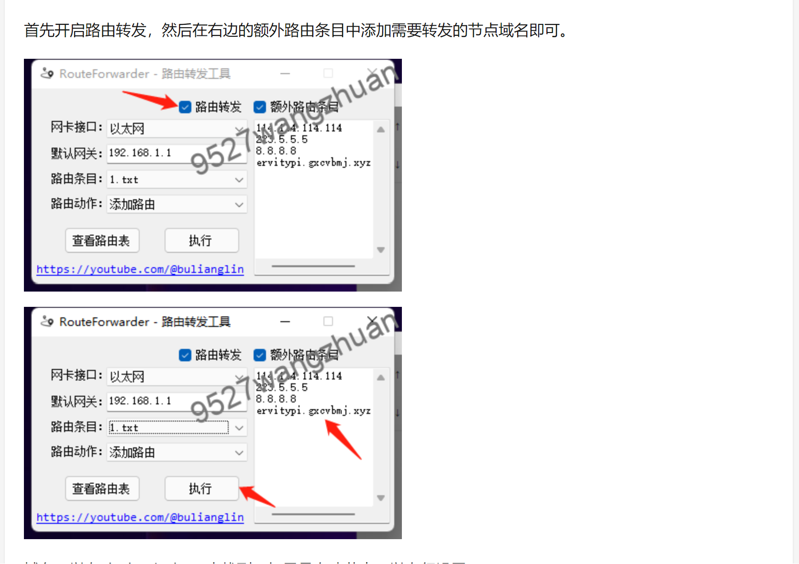
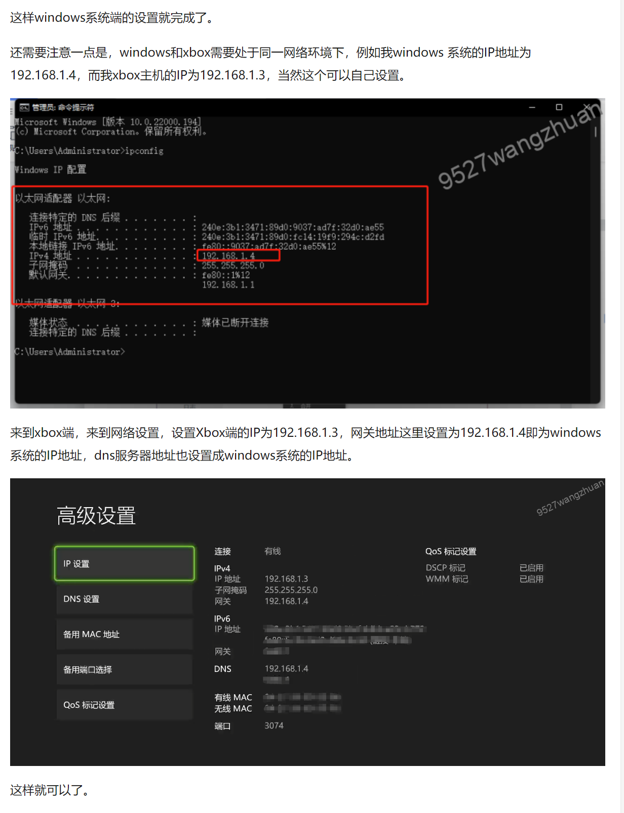

本文我们来讲解Windows平台V2ray通过Routeforwarder旁路网关代理Xbox游戏机网络攻略（看不懂可右边联系方式找我们协助帮你指导设置好，本站也销售住宅IP网络，搭配使用效果更佳）：
V2ray 电脑客户端 界面预览：

下载
官网下载
v2rayN官网下载地址：https://github.com/2dust/v2rayN/releases 新手使用建议下载稳定版本，即版本号后标记为 Latest 的版本。
广告： 点击这里马上购买美国日本韩国英国德国的住宅IP线路，非常适合于XBOX游戏
我们的客服会帮你直接全部设置好可以使用。
安装教程
软件目录
下载完成后，找到合适的目录，推荐安装在非系统盘，解压压缩包，解压后的目录如下图所示。

单击鼠标右键以管理员身份运行 v2rayN.exe 即可开始使用，程序启动后会最小化到任务右小角的托盘，鼠标双击蓝色的 V 字小图标，即可打开软件的主界面。
图标说明
不同状态下软件的图标颜色是不一样的，参考下表图标颜色说明。
| 图标 | 软件状态 | 说明 |
| 清除系统代理 | 每次启动/重启服务的时候，强制把windows系统(ie)的代理清除掉。 | |
| 自动配置系统代理 | 每次启动/重启服务的时候，强制设定windows系统(ie)的代理。 | |
| 不改变系统代理 | 每次启动/重启服务的时候，什么都不做。作用就是保留其他软件设定的代理。 |
节点
节点即软件中的服务器，在使用之前，首先需要添加一个v2ray节点即服务端才能使用代理上网功能。
广告： 点击这里马上购买美国日本韩国英国德国的住宅IP线路，非常适合于XBOX游戏
添加服务器
获取节点服务器信息后，就可以开始添加服务器了，点击软件主界面的服务器，根据不同的节点添加不同的节点服务器。

方法一：剪贴板导入教程
首先复制节点服务器的连接地址，单机鼠标右键复制或者使用键盘快捷键 Ctrl+C 复制节点地址，注意一定要复制全，不能空格。

然后点击软件主界面的服务器，选择从剪贴板导入批量URL即可导入节点信息，如上图所示。
方法二： 扫描屏幕二维码教程
首先打开服务器节点的二维码图片，在电脑屏幕上，不要遮挡了，然后打开软件，点击软件主界面的服务器，选择扫描屏幕上的二维码即可导入节点信息，如下图所示。

开始使用V2RAY教程
在添加完节点信息后，开启系统代理并选择路由模式，即可开始使用代理服务器上网了，如下面系统代理及路由模式章节所述。
系统代理
按照上面的配置教程配置完服务器（节点）后，需要设置系统代理才能让浏览器支持科学上网功能，在任务栏右下角系统托盘找到软件的图标，在图标上单击鼠标右键，找到系统代理，点击自动配置系统代理，此时软件的图标会标称红色，至此就可以开始使用了，打开 Google 试试能不能访问吧。

路由模式
路由的功能是将入站数据按需求由不同的出站连接发出，以达到按需代理的目的。这一功能的常见用法是分流国内外流量，可以通过内部机制判断不同地区的流量，然后将它们发送到不同的出站代理，有以下三种路由模式可以选择。
- 白名单(Whitelist)模式：只是白名单内的网站通过节点服务器代理上网
- 黑名单(Blacklist)模式：除了黑名单内的网站，其余网站都通过节点服务器代理上网
- 全局(Global)模式：所有网站通过节点服务器代理上网
根据不同的需求选择合适的路由模式，一般选择全局模式。

开机自动启动
在点击软件主界面的设置，点击参数设置进入参数设置页面后，选择v2rayN设置标签页，勾选上开机自动启动复选框，然后点击确认，如下图所示。

首先开启路由转发，然后在右边的额外路由条目中添加需要转发的节点域名即可。
 广告： 点击这里马上购买美国日本韩国英国德国的住宅IP线路，非常适合于XBOX游戏
需要注意一点是，windows和xbox需要处于同一网络环境，也就是连接的是同一个路由器
例如windows 系统的固定IP地址设置 为192.168.1.4
来到xbox端，来到网络设置，设置Xbox端的IP为192.168.1.213，网关地址这里设置为192.168.1.4即为windows系统的IP地址，dns服务器地址也设置成windows系统的IP地址192.168.1.4
这样就可以了。现在Xbox 已经可以使用电脑的网络进行连接外网了。
广告： 点击这里马上购买美国日本韩国英国德国的住宅IP线路，非常适合于XBOX游戏
我们打开edge浏览器查看下IP，这里显示为windows系统端理节点的IP地址，这样就设置好了。